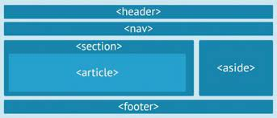

Este sitio se creo con el proposito de ayudar a obtener
conocimientos acerca de las etiquetas semanticas y css Grid
buscando apliar los conocimientos de quienes lo necesiten.
Etiquetas semanticas

Las etiquetas semánticas indican qué es el contenido que contienen,
en lugar de cómo se debe formatear al mostrar el documento HTML.
Estas etiquetas, tienen importancia en el marco del HTML
y de la composición de un documento web para ayudar a los motores de búsqueda como Google a indexar más correctamente los contenidos de un sitio.
: la cabecera de una web, ojo, no confundir con la etiqueta head.
CSS grid
CSS Grid es un modelo de maquetación CSS en base a una rejilla, algo que podría no parecer tan novedoso, si tenemos en cuenta que diversas librerías de CSS lo habían intentado ya. Sistemas como 960 Grid System fueron pioneros en crear una base de código CSS para que los diseñadores pudieran posicionar los elementos en una distribución de filas y columnas. El propio Bootstrap incluye entre otras cosas un sistema de rejilla. Al final, estos sistemas funcionaron pero tenían varios problemas:
Agregaban peso al CSS, con código de cientos de clases que muchas veces ni siquiera llegabas a usar.
Habia que aplicar constantemente clases y nombre que ensuciaban mucho el HTML.
Creaba código de muy difícil mantenimiento, haciendo que el proyecto estuviera ligado de manera muy directa con un sistema propietario.